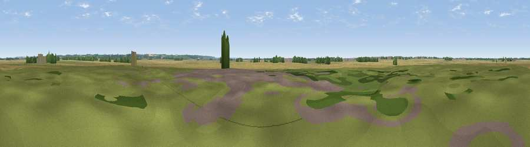

Viewpoint near Bransby
#44458 in England · top 92% of its area beats it · near BransbyWhere it is
The exact computed spot (SK 91243 80655). Click the marker for map links.
The view, rendered

A 360° render of this exact spot computed from the terrain model, tree cover and land cover — summer colours, afternoon light, calibrated against photographs of famous viewpoints. Real trees, hedges and buildings will differ in detail.
The panorama
Grey silhouette: terrain skyline in each direction (720 bearings, Earth curvature and refraction included). Dashed green: skyline with trees (+15 m) and buildings (+8 m) as obstacles. Blue strip: how far the ground is visible on each bearing.
Where the view opens
Wedge length = distance to the farthest visible ground on that bearing (vegetation-aware). Rings at 10, 25 and 50 km.
What fills the view
69% cropland · 25% grassland · 4% woodland ·
Angular shares of the visible panorama (visual magnitude), not map area. Landscape diversity 0.34 (0–1 Shannon).
Key numbers
More beautiful places nearby
The staircase of upgrades: each row has a higher view potential than everything closer. Driving times are estimates from straight-line distance, calibrated against real road routing — check an actual route before setting out.
| Place | Direction | Drive | Score |
|---|---|---|---|
| Viewpoint near Sturton by Stow | W · 3 km | ~7 min | 30.7 |
| Scampton Viewpoint | ESE · 5 km | ~11 min | 36.8 |
| Viewpoint near Ingham | ENE · 5 km | ~12 min | 46.9 |
| Viewpoint near Burton-by-Lincoln | SE · 7 km | ~14 min | 54.9 |
| Castle Hill | W · 17 km | ~29 min | 55.7 |
| Viewpoint near Gringley on the Hill | WNW · 19 km | ~33 min | 59.3 |
| Beacon Hill | WNW · 20 km | ~34 min | 65.7 |
| Viewpoint near Claxby | NE · 25 km | ~41 min | 71.5 |
53.31498, -0.63189 · source: osm peak · position refined by local search. Computed location — check access rights before visiting.